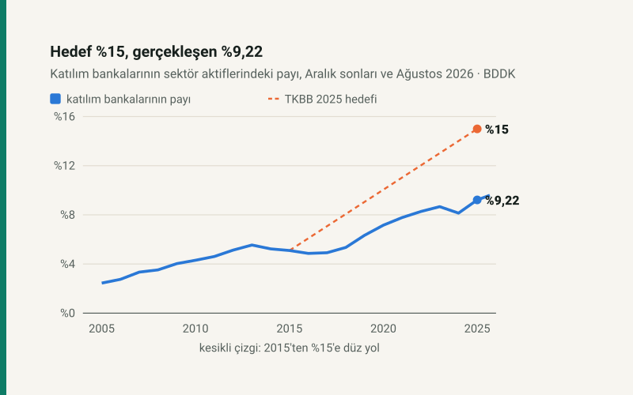

Kısa cevap
Pay hedefi tutmadı. BDDK verisiyle katılım bankalarının sektör aktiflerindeki payı Aralık 2025'te %9,22: hedefin %61'i. 2015'te %5,10'du; on yılda 4,12 puan arttı. Ağustos 2026'da %9,59.
TL hedefi tuttu, ama bir şey söylemiyor. 2021'deki güncelleme, %15'e karşılık 2025'te 1,77 trilyon TL aktif bekliyordu. Gerçekleşen 4,33 trilyon TL. Oysa 2020 sonundaki aktif hiç reel büyümeseydi, yalnız enflasyonla 3,04 trilyon TL'ye çıkacaktı.
Dünyada: İslami bankacılığın 2024'teki 4,3 trilyon dolarlık varlığında Türkiye 75 milyar dolarla 8. sırada; payı %1,7.
Hedef nereden geldi?
Türkiye Katılım Bankaları Birliği (TKBB) 2015'te yayımladığı strateji belgesinde, katılım bankalarının 2025'te Türk bankacılık sektöründeki payının %15'e çıkmasını hedefledi. O yıl sonunda pay %5,10'du; hedef, payın on yılda üç katına yaklaşması demekti.
Birlik, 2020'nin son çeyreğinde bir danışmanlık şirketiyle stratejiyi güncelledi. Güncelleme Raporu (2021-2025) %15 hedefini aynen korudu ve "bu büyüme ile" 2025'te katılım aktiflerinin 1,77 trilyon TL'ye ulaşmasını beklediğini yazdı. Yani 1,77 trilyon TL ayrı bir hedef değil, o günün fiyatlarıyla %15'in TL karşılığıydı.
İki ölçüt, iki sonuç
| Ölçüt | Hedef | Gerçekleşen | Gerçekleşen / hedef |
|---|---|---|---|
| Sektördeki pay | %15 | %9,22 | %61 |
| Aktif büyüklüğü | 1,77 trilyon TL | 4,33 trilyon TL | %244 |
TKBB'nin 2025 faaliyet raporu ikinci satıra bakıyor. Rapor, sektörün büyüme performansının "stratejik hedeflerin de öngörülen takvimden önce gerçekleşmesini" sağladığını yazıyor ve dayanak olarak 1,77 trilyon TL'yi gösteriyor. Aynı rapor payın %9,2 olduğunu da yazıyor; ama bunu %15 ile karşılaştırmıyor.
1,77 trilyon TL neden kolay aşıldı?
Çünkü TL ile yazılmış bir hedef, yüksek enflasyonda kendiliğinden aşılır. Aralık 2020'den Aralık 2025'e tüketici fiyatları 6,96 katına çıktı. Katılım bankalarının 2020 sonundaki 437 milyar TL'lik aktifi, reel olarak hiç büyümeseydi 2025 sonunda 3,04 trilyon TL olacaktı: "hedefin" 1,7 katı.
Raporun hesabı başka bir şeyi de gösteriyor. 1,77 trilyon TL'nin %15 olabilmesi için sektörün 2025'te 11,8 trilyon TL olması gerekiyordu. Gerçekleşen 46,9 trilyon TL; yaklaşık 4,0 katı. 1,77 trilyon TL 2020 sonunda yapılmış bir projeksiyondu; sonraki beş yılın enflasyonu onu anlamsız kıldı. Pay ise enflasyondan etkilenmez: pay da payda da aynı fiyatlarla büyür.
Yine de büyüdü
Pay hedefi tutmasa da katılım bankaları sektörden hızlı büyüdü. 2020 sonundan 2025 sonuna aktifleri reel olarak %42, bütün sektör %10 büyüdü. Dolarla bakınca 2015'te 41,4 milyar dolar olan aktif 2025'te 101,2 milyar dolar: 2,4 kat. Aynı dönemde sektörün dolar büyüklüğü 1,35 katına çıktı.
| Dönem | Katılım aktifi, milyar TL | Sektör, trilyon TL | Pay | Katılım aktifi, milyar $ |
|---|---|---|---|---|
| 2015 | 120 | 2,4 | %5,10 | 41,4 |
| 2016 | 133 | 2,7 | %4,87 | 37,7 |
| 2017 | 160 | 3,3 | %4,92 | 42,3 |
| 2018 | 207 | 3,9 | %5,35 | 39,2 |
| 2019 | 284 | 4,5 | %6,33 | 47,9 |
| 2020 | 437 | 6,1 | %7,16 | 59,3 |
| 2021 | 717 | 9,2 | %7,78 | 54,4 |
| 2022 | 1.188 | 14,3 | %8,28 | 63,5 |
| 2023 | 2.041 | 23,6 | %8,67 | 69,4 |
| 2024 | 2.660 | 32,7 | %8,14 | 75,7 |
| 2025 | 4.327 | 46,9 | %9,22 | 101,2 |
| Ağustos 2026 | 5.346 | 55,7 | %9,59 | 111,2 |
Seri düz bir çizgi değil. Pay 2014–2016'da geriledi, 2019–2023'te hızlandı, 2024'te düştü, 2025'te en büyük yıllık artışını yaptı. %15 için 2025 sonunda katılım aktiflerinin 7,52 trilyon TL olması gerekiyordu, diğer bankalar yerinde dururken: gerçekleşenin 1,74 katı.
Bu hızla %15 ne zaman?
Bu bir tahmin değil, aritmetik. 2015–2025 arasında pay yılda ortalama 0,41 puan arttı; aynı hızla %15'e 2039'da ulaşılır. Aralık 2025'ten Ağustos 2026'ya artış yıllık 0,56 puan hızında; bu hızla 2036. Hedef yılından on yıl kadar sonrası.
Dünyada nerede?
İslami bankacılık varlıkları 2024'te 4,3 trilyon dolar. Tablonun yarısına yakını tek ülkede: İran'da bankacılık sistemi tümüyle faizsiz olduğu için bütün banka varlıkları bu kapsamda sayılıyor ve İran tek başına %46,6. Türkiye 75 milyar dolarla sekizinci; payı %1,7. Bu rakam BDDK'nın Aralık 2024 verisiyle (75,7 milyar dolar) uyumlu.
| Sıra | Ülke | Milyar $ | Dünyadaki payı |
|---|---|---|---|
| 1 | İran | 2.012 | %46,6 |
| 2 | Suudi Arabistan | 913 | %21,1 |
| 3 | Malezya | 312 | %7,2 |
| 4 | BAE | 306 | %7,1 |
| 5 | Kuveyt | 180 | %4,2 |
| 6 | Bahreyn | 153 | %3,5 |
| 7 | Katar | 88 | %2,0 |
| 8 | Türkiye | 75 | %1,7 |
| 9 | Endonezya | 59 | %1,4 |
| 10 | Bangladeş | 50 | %1,2 |
Sıralama büyüklüğü gösteriyor, ülke içindeki ağırlığı değil. Türkiye'de katılım bankaları sektörün yaklaşık onda biri; geri kalanı konvansiyonel bankacılık.
Varsayımlar ve sınırlar
- Pay, BDDK Aylık Bülteni'ndeki üç banka grubunun (mevduat, katılım, kalkınma ve yatırım) toplam aktiflerinin toplamına göre hesaplandı. Aralık 2025 sonucu, TKBB'nin kendi raporundaki %9,2 ve 4 trilyon 327 milyar TL ile aynı.
- Katılım bankaları BDDK bülteninde 2005'ten itibaren yer alıyor; öncesinde özel finans kurumları olarak bankacılık verisinin dışındaydı.
- Haberlerde 2015 hedefinin bir parçası olarak geçen "300 milyar dolar aktif" rakamı, 2015 belgesine erişilemediği ve güncelleme raporunda yer almadığı için kullanılmadı.
- Enflasyon karşılaştırması TÜİK'in Aralık–Aralık tüketici fiyatlarıyla yapıldı. Banka aktifinde dövizli kalemler de var; reel büyüme oranları bir yaklaşıklıktır.
- Küresel rakamlar ICD–LSEG raporundan, TKBB 2025 faaliyet raporundaki aktarımıyla. IFSB'nin istikrar raporu otomatik erişime kapalı olduğu için kullanılamadı; iki kurumun kapsamı farklı, küresel toplamlar birebir aynı değil.
Kaynaklar
- BDDK Aylık Bülten: Bilanço, toplam aktifler; mevduat, katılım, kalkınma ve yatırım bankaları; TL ve ABD doları; Aralık 2005–Ağustos 2026 (25 Ekim 2026'da indirildi)
- Türkiye Katılım Bankaları Birliği, Katılım Bankacılığı Strateji Güncelleme Raporu (2021-2025): %15 hedefi ve 1,77 trilyon TL beklentisi
- Türkiye Katılım Bankaları Birliği, 2025 Faaliyet Raporu: 2025 sonu aktif ve pay, küresel İslami bankacılık (ICD–LSEG Islamic Finance Development Report 2025 aktarımı)
- Tüketici fiyatları: TÜİK, sitenin endeksleme serisi (
finans/endeksleme-serileri.js)
Bütün oranlar yazının modülünden (katilim.js) gelir; modül BDDK verisinin anlık görüntüsünü okur. Otomatik test, payları ham veriden bağımsız olarak yeniden hesaplar ve yazıdaki her rakamı sayfada arar.
Sık sorulan sorular
Katılım bankacılığının payı ne kadar?
BDDK verisiyle Aralık 2025'te sektör aktiflerinin %9,22'si; Ağustos 2026'da %9,59.
Katılım bankacılığı %15 hedefine ulaştı mı?
Hayır. 2015'te 2025 için konan %15 hedefinin %61'ine ulaşıldı. Hedefin TL karşılığı olarak yazılan 1,77 trilyon TL aşıldı, ama bunun nedeni enflasyon.
Dünyada İslami bankacılık ne kadar büyük?
ICD–LSEG'e göre 2024'te 4,3 trilyon dolar. İran, Suudi Arabistan ve Malezya ilk üç; Türkiye 75 milyar dolarla sekizinci.
Katılım bankası ile mevduat bankası arasındaki fark ne?
Katılım bankaları fonu mevduat yerine katılma hesabıyla toplar ve sabit faiz yerine, kullandırdığı finansmandan doğan kâr ya da zarara katılma esasıyla kâr payı dağıtır.